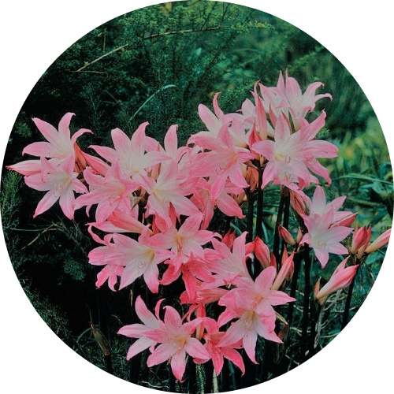

Jersey Lily
Water: Once every week.
Should be given direct sunlight in a bright environment. Consider sitting your plant in a place where you can get the most hours of sunshine. Soil should be kept moist while watering about once a week during the growing season.